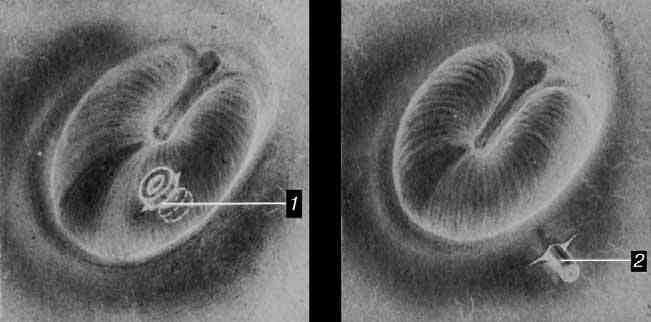
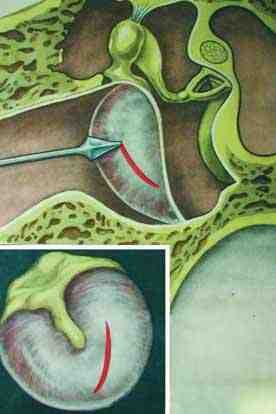

Сверка с PDF рубрикатора выполняется…
Отит средний острый
Клинические рекомендации от 28.10.2024 · взрослые и дети
Основные положения
- Острый средний отит (ОСО) является воспалительным процессом, охватывающим все три отдела среднего уха: барабанную полость, клетки сосцевидного отростка и слуховую трубу. Заболевание проявляется болью в ухе, повышением температуры тела, снижением слуха, в ряде случаев гноетечением из уха.
- Диагноз острого среднего отита:Обязательные критерии (все три одновременно)
- острое начало заболевания;
- воспалительные изменения барабанной перепонки: гиперемия, инфильтрация;
- признаки выпота в барабанной полости: выбухание барабанной перепонки или снижение её подвижности при пневмоотоскопии или тимпанометрии.
Диагноз подтверждает также внезапно возникшая оторея при исключённом наружном отите.
- Показания к системной антибактериальной терапии:
- возраст до 2 лет: во всех случаях при клинических признаках отита;
- гнойная форма независимо от возраста;
- сохранение симптомов более 72 часов;
- рецидивирующее течение;
- отягощающая сопутствующая патология;
- невозможность повторного осмотра пациента.
- Препаратом первой линии является амоксициллин. При отсутствии эффекта в течение 3 дней его заменяют на амоксициллин с клавулановой кислотой или цефиксим. Курс составляет 7–10 дней.
- Для обезболивания используют нестероидные противовоспалительные препараты (НПВП) или парацетамол; ушные капли с лидокаином и феназоном допустимы только при отсутствии перфорации барабанной перепонки.
- Показания к экстренной госпитализации:
- тяжёлое течение;
- отсутствие положительной динамики при лёгком течении на фоне адекватной терапии в течение 3–5 дней;
- прогрессирующее ухудшение состояния в любые сроки.
- Через 3–4 недели пациента повторно осматривают с пневмоотоскопией или тимпанометрией, чтобы своевременно выявить экссудативный средний отит.
Клиническая картина и классификация
Определения
Острый средний отит: воспаление всех трёх отделов среднего уха (барабанной полости, клеток сосцевидного отростка и слуховой трубы); поражается только слизистая оболочка.
Проявляется одним или несколькими симптомами- боль в ухе;
- повышение температуры тела;
- снижение слуха;
- в ряде случаев гноетечение.
Рецидивирующим считается отит при 3 и более эпизодах за 6 месяцев или 4 и более эпизодах за 12 месяцев.
Затянувшимся считается отит, при котором симптомы воспаления среднего уха сохраняются в течение 3–12 месяцев после одного или двух курсов антибактериальной терапии.
У детей возможны возбуждение, раздражительность, рвота и диарея. Заболевание, как правило, длится не более трёх недель.
Стадии по В. Т. Пальчуну, 1997
- острый евстахеит;
- острое катаральное воспаление;
- доперфоративная стадия острого гнойного воспаления;
- постперфоративная стадия острого гнойного воспаления;
- репаративная стадия.
Отоскопическая картина каждой стадии приведена в разделе «Диагностика».
Барабанная перепонка в норме (а) и схема её деления на квадранты (б)

Степень тяжести таблица 1 в тексте КР
| Лёгкое течение | Тяжёлое течение |
|---|---|
| Осложнения отсутствуют | Интратемпоральные или внутричерепные осложнения |
| Выбухание барабанной перепонки отсутствует | Выраженное выбухание барабанной перепонки |
| Непродолжительная боль в ухе, хорошо купируется лекарственными средствами | Выраженный болевой синдром (у детей раннего возраста проявляется изменением поведения), плохо купируется или не купируется лекарственными средствами |
| Общее состояние не изменено: сон, аппетит и активность не нарушены | Общее состояние изменено |
| Нормальная температура тела или субфебрилитет не более 3 дней | Субфебрилитет более 3 дней или температура тела выше 38,0 °C |
Клиническая картина
- остро возникшая боль в ухе;
- воспалительные изменения барабанной перепонки: гиперемия, выбухание, снижение подвижности при пневмоотоскопии;
- оторея в постперфоративной стадии.
- выбухание барабанной перепонки;
- изменения поведения: беспокойство, отказ от еды, ребёнок теребит и трёт ухо.
Взрослые пациенты чаще предъявляют жалобы на заложенность уха, аутофонию и шум в ухе.
Снижение слуха носит кондуктивный характер; сенсоневральный компонент присоединяется редко.
Возбудитель и выбор антибактериального препарата
Возбудителя в ряде случаев можно предположить по клинической картине. При сочетании отита с конъюнктивитом наиболее вероятным возбудителем является H. influenzae. Стремительное начало с лихорадкой, спонтанной перфорацией и симптомами со стороны дыхательных путей характерно для S. pyogenes, нарастающая боль, лихорадка и спонтанная перфорация характерны для S. pneumoniae.
Скрыто в режиме «Кратко»: жалобы взрослых, подсказки по возбудителю.
В учебнике: острый и экссудативный средний отит, мастоидит. Анатомия и физиология: наружное и среднее ухо, внутреннее ухо.
Диагностика
Критерии диагноза
- острое начало заболевания;
- воспалительные изменения барабанной перепонки: гиперемия, инфильтрация;
- признаки выпота в барабанной полости: выбухание барабанной перепонки или снижение её подвижности при пневмоотоскопии или тимпанометрии.
Диагноз подтверждает также внезапно возникшая оторея при исключённом наружном отите.
Отоскопия
Отоскопию выполняют всем пациентам при первичном осмотре оториноларинголога, при обращении и при госпитализации.
- В стадии острого катарального воспаления барабанная перепонка гиперемирована, утолщена, опознавательные знаки определяются с трудом или не определяются.
Острый средний отит, начальная стадия

Острый средний отит, начальная стадия: гиперемия барабанной перепонкиИсточник: Wikimedia Commons, автор B. Welleschik, лицензия CC BY-SA 3.0 (Otitis media incipient.jpg) - В стадии острого гнойного воспаления боль в ухе резко усиливается, температура тела достигает фебрильных значений; барабанная перепонка ярко гиперемирована, выбухает, опознавательные знаки не определяются, возможна перфорация.
Опознавательные знаки барабанной перепонки не дифференцируются (острый средний отит)

Источник: Wikimedia Commons, автор B. Welleschik, лицензия CC BY-SA 3.0 (Otitis media entdifferenziert1.jpg) - В постперфоративной стадии через перфорацию барабанной перепонки в наружный слуховой проход поступает гнойное отделяемое.
- В репаративной стадии жалобы практически отсутствуют, цвет и толщина барабанной перепонки восстанавливаются, перфорация в большинстве случаев закрывается рубцом, однако восстановление слизистой оболочки среднего уха ещё не наступило.
Пневматическая отоскопия
- острый средний отит при отсутствии реактивных изменений барабанной перепонки: определение её подвижности.
- снижение подвижности (податливости) барабанной перепонки указывает на воспалительный выпот в барабанной полости.
Тональная аудиометрия
- затяжное течение (более 10 дней);
- рецидивирующий отит;
- исключение нейросенсорной тугоухости.
Общий (клинический) анализ крови
- все пациенты с острым средним отитом.
- уровень лейкоцитоза позволяет оценить вероятность бактериальной природы воспаления (пороговые значения в таблице ниже).
Прокальцитонин крови
- подозрение на тяжёлое течение;
- сложные диагностические случаи: подтверждение бактериальной природы отита.
Маркеры бактериального воспаления таблица 2 в тексте КР (М. Д. Бакрадзе, 2009)
| Показатель | Катаральный отит | Гнойный отит |
|---|---|---|
| Лейкоциты <10 / 10–15 / >15 ×10⁹/л | 50% / 38% / 12% | 12% / 29% / 59% |
| СРБ <15 / 15–60 / ≥60 мг/л | 33% / 50% / 17% | 14% / 36% / 50% |
| ПКТ <0,5 / 0,5–2 / 2–10 нг/мл | 58% / 38% / 4% | 4% / 32% / 64% |
- лейкоциты >15×10⁹/л (ППР 85%, ПОР 64%);
- С-реактивный белок (СРБ) >30 мг/л (ППР 79%, ПОР 52%);
- прокальцитонин (ПКТ) >2 нг/мл (ППР 94%, ПОР 74%).
Таблица в PDF представлена изображением; значения перенесены вручную и сверены по изображению страницы 13.
Микробиологическое исследование отделяемого
Посев гнойного отделяемого на аэробные и факультативно-анаэробные микроорганизмы с определением чувствительности к антибиотикам.
Показания- парацентез или отделяемое из барабанной полости у пациентов в стационаре с тяжёлым и рецидивирующим течением.
- отделяемое из барабанной полости забирают сухим стерильным ватным тампоном;
- материал с соблюдением асептики помещают в пробирку с транспортной питательной средой;
- оптимальное время доставки в лабораторию 40 минут.
Компьютерная томография височных костей
- затяжное течение (более 10 дней);
- выраженная стойкая отрицательная динамика;
- подозрение на мастоидит или внутричерепные осложнения.
Если КТ выполнить невозможно, по тем же показаниям проводят рентгенографию височных костей в проекциях по Шюллеру и Майеру.
Лечение
Обезболивающая и жаропонижающая терапия
При болевом синдроме и лихорадке применяют НПВП или парацетамол разово:
- при боли в ухе;
- при температуре тела выше 38,5 °C;
- при фебрильных судорогах в анамнезе уже при 38,0 °C.
Детям до 6 лет допустимы только:
- парацетамол: до 60 мг/кг в сутки, 10–15 мг/кг на приём;
- ибупрофен: до 30 мг/кг в сутки, 8–10 мг/кг на приём.
- дети раннего возраста: ректальные суппозитории или суспензия;
- дети старше 6 лет: как правило, таблетки, покрытые плёночной оболочкой;
- при невозможности приёма внутрь и ректального введения: парацетамол парентерально в разовой дозе 15 мг/кг.
У взрослых возможно применение кетопрофена; определённые фармакологические преимущества имеют препараты кетопрофена лизиновой соли.
Местное обезболивание обеспечивают ушные капли с лидокаином и феназоном; их применение допустимо только при отсутствии перфорации барабанной перепонки.
Показания к антибактериальной терапии таблица 3 в тексте КР
Системную антибактериальную терапию назначают при наличии хотя бы одного из показаний:
| Показание | Пояснение |
|---|---|
| Возраст до 2 лет | Во всех случаях при наличии клинических признаков ОСО |
| Гнойная форма независимо от возраста | Перфорация барабанной перепонки с гнойным отделяемым; при отсутствии перфорации болевой синдром, не купируемый анальгетиками, в сочетании с выраженной гиперемией, отсутствием опознавательных знаков и выбуханием барабанной перепонки |
| Сохранение симптомов более 72 часов независимо от возраста | Боль, лихорадка или интоксикация при отоскопических признаках ОСО в течение 72 часов и более от начала заболевания |
| Рецидивирующее течение | 3 и более эпизода за 6 месяцев или 4 и более за год |
| Сопутствующая патология | Сахарный диабет, иммунодефицитные состояния, муковисцидоз, синдромы цилиарной дискинезии, синдром Дауна, врождённые аномалии твёрдого и мягкого нёба |
| Невозможность повторного осмотра | Отсутствует возможность контрольного осмотра с отоскопией врачом-оториноларингологом или врачом общей практики |
Варианты шунтирования барабанной полости

Парацентез барабанной перепонки в задненижнем квадранте

Выбор антибактериального препарата
Препаратом первой линии является амоксициллин при условии, что пациент не принимал его в течение последних 30 дней, а гнойный конъюнктивит и непереносимость аминопенициллинов отсутствуют.
Препаратами второй линии являются защищённые пенициллины и цефалоспорины III поколения. При отсутствии эффекта от амоксициллина в течение 3 дней его заменяют на амоксициллин с клавулановой кислотой или цефиксим.
- неадекватная дозировка антибиотика;
- недостаточная всасываемость;
- низкая приверженность лечению;
- низкая концентрация препарата в очаге воспаления.
При затянувшемся и рецидивирующем отите стартовыми препаратами являются амоксициллин с клавулановой кислотой или цефиксим внутрь.
При тяжёлом течении у пациентов стационара предпочтительно внутримышечное или внутривенное введение антибиотиков. Целесообразны цефалоспорины III поколения для парентерального введения: цефотаксим или цефтриаксон; при внутривенном введении возможно применение амоксициллина с клавулановой кислотой.
Макролиды у детей относятся к препаратам третьей линии; их применение оправдано только при IgE-опосредованной непереносимости бета-лактамов, поскольку устойчивость пневмококка к ним превышает 40%.
При лёгкой непереносимости пенициллинов альтернативой служат цефалоспорины III поколения: в амбулаторных условиях цефиксим, в стационаре при необходимости цефтриаксон парентерально.
Продолжительность курса составляет 7–10 дней. Более длительные курсы необходимы:
- детям до 2 лет;
- пациентам с отореей;
- пациентам с сопутствующими заболеваниями;
- при затянувшемся и рецидивирующем отите: как правило, не менее 14 дней.
Антибактериальную терапию не прекращают до купирования отореи.
Тетрациклины, линкозамиды, аминогликозиды и ко-тримоксазол не рекомендуются в связи с низкой активностью в отношении пневмококка и гемофильной палочки и высокой частотой нежелательных явлений.
В постперфоративной стадии системная антибактериальная терапия продолжается.
Суточные дозы таблица 4 в тексте КР
| Препарат | Взрослые | Дети |
|---|---|---|
| Препарат выбора | ||
| Амоксициллин (независимо от приёма пищи) | 0,5 г 3 раза в сутки без факторов риска¹; 1,0 г 3 раза в сутки при факторах риска² | 50–60 мг/кг в сутки в 2–3 приёма¹; 80–90 мг/кг в сутки при факторах риска² (по комментарию к рекомендации) |
| Альтернативные препараты | ||
| Амоксициллин + клавулановая кислота внутрь³ (в начале приёма пищи) | 500/125 мг 3 раза в сутки или 875/125 мг 2 раза в сутки | 40–45 мг/кг в сутки в 2–3 приёма |
| Амоксициллин + клавулановая кислота в/в⁴ | 3,6 г в сутки в 3 введения | 90 мг/кг в сутки в 3 введения (при массе тела 4–40 кг); 60 мг/кг в сутки (при массе тела менее 4 кг) |
| Ампициллин + сульбактам в/в³ | 1,5–3 г в сутки в 4 введения | 150–300 мг/кг в сутки в 3–4 введения |
| Цефтриаксон⁴ | 2,0–4,0 г в сутки в 1 введение | 50–80 мг/кг в сутки в 1 введение |
| Аллергия на пенициллины (не анафилактическая) | ||
| Цефуроксим (непосредственно после приёма пищи) | 500 мг в сутки в 2 приёма (так в таблице КР) | до 3 лет: 30 мг/кг в сутки в 2 приёма; старше 3 лет: 500 мг в сутки в 2 приёма |
| Цефиксим | 400 мг в сутки в 1 приём | 8 мг/кг в сутки в 1 приём |
| Аллергия на пенициллины и цефалоспорины | ||
| Кларитромицин внутрь (показание «острый средний отит» зарегистрировано только для гранул для приготовления суспензии 125 и 250 мг/5 мл) | 1000 мг в сутки в 2 приёма | 15 мг/кг в сутки в 2 приёма |
- приём антибиотиков в предшествующие 3 месяца;
- дети дошкольного возраста в семье, посещающие детские учреждения;
- проживание в «закрытых» учреждениях.
- сопутствующие заболевания (бронхиальная астма, сахарный диабет, хронический бронхит);
- иммуносупрессия;
- неэффективность терапии амоксициллином.
⁴ При высоком риске осложнений.
У детей до 3 лет амоксициллин применяют только в форме суспензии или диспергируемых таблеток. Амоксициллин с клавулановой кислотой и цефиксим в таблетках и капсулах разрешены к применению с 12 лет; для детей младше 12 лет с массой тела менее 40 кг предназначены гранулы, порошок для приготовления суспензии или диспергируемые таблетки.
Местная и вспомогательная терапия
При перфорации барабанной перепонки купирование отореи ускоряют ушные капли на основе фторхинолонов или дексаметазона в комбинации с противомикробными средствами. Капли, содержащие аминогликозиды, и спиртосодержащие капли противопоказаны в связи с ототоксическим действием.
- норфлоксацин: старше 1 года;
- ципрофлоксацин: с 15 лет;
- офлоксацин, дексаметазон в комбинации с противомикробными средствами: старше 1 года при остром гнойном отите и установленной тимпаностомической трубке.
Сосудосуживающие капли в нос используют во всех стадиях для восстановления проходимости слуховой трубы на срок не более 5–7 дней. Применение нафазолина не рекомендуется.
Детям до 6 лет:
- фенилэфрин 0,125%;
- оксиметазолин 0,01–0,025%;
- ксилометазолин 0,05%: с 2 лет.
До года допустимы только капли, после года по возможности переходят на дозированный назальный спрей.
Детям рекомендуется орошение полости носа изотоническим раствором морской воды 1–2 раза в день. У детей дошкольного возраста от промывания полости носа большими объёмами растворов следует воздержаться, поскольку это повышает риск развития отита.
Муколитические препараты применяют у детей старше 2 лет. Перед назначением следует свериться с зарегистрированными показаниями в инструкции, поскольку не каждый муколитик, эффективный при патологии бронхов, пригоден для лечения отита.
- ацетилцистеин: детям старше 2 лет только раствор для приёма внутрь и гранулы для приготовления раствора;
- карбоцистеин: детям до 15 лет только в форме сиропа.
Хирургическое лечение
Показания к парацентезу
- выраженная клиническая симптоматика и выбухание барабанной перепонки без перфорации;
- болевой синдром, не купируемый НПВП;
- отсутствие улучшения через 48–72 часа антибактериальной терапии.
Во всех сомнительных случаях решение принимают в пользу парацентеза.
Внутривисочные или внутричерепные осложнения требуют экстренной антромастоидотомии.
Парацентез на фоне системной антибактериальной терапии может рассматриваться как первая помощь при признаках внутривисочных и, в меньшей степени, внутричерепных осложнений: он позволяет выиграть время для подготовки к антромастоидотомии.
Скрыто: причины неэффективности антибиотиков, третья линия и аллергия, постперфоративная стадия, кетопрофен, лекарственные формы, возраст для ушных капель, промывание носа, муколитики.
Техника операций в учебнике: парацентез барабанной перепонки, шунтирование барабанной полости.
Алгоритм действий врача при остром среднем отите
- 1
Пациент с подозрением на острый средний отит
Пациент жалуется на боль в ухе, повышение температуры тела, снижение слуха, в ряде случаев на гноетечение из уха. Взрослые чаще предъявляют жалобы на заложенность уха, аутофонию и шум в ухе. У детей раннего возраста о болезни свидетельствуют беспокойство, отказ от еды, ребёнок теребит и трёт ухо. Возникает подозрение на острый средний отит.
- 2
Диагностика
Всем пациентам показан первичный осмотр оториноларинголога с отоскопией. При отсутствии реактивных изменений барабанной перепонки оценивают её подвижность методом пневматической отоскопии: снижение подвижности указывает на воспалительный выпот в барабанной полости.
Общий анализ крови выполняют всем пациентам; лейкоцитоз выше 15×10⁹/л и повышение С-реактивного белка более 30 мг/л повышают вероятность гнойного отита. Тональная аудиометрия показана при затяжном течении (более 10 дней), рецидивирующем отите и для исключения нейросенсорной тугоухости; КТ височных костей — при затяжном течении, выраженной стойкой отрицательной динамике и подозрении на мастоидит или внутричерепные осложнения.
- 3
Диагноз подтверждён?
Диагноз острого среднего отита устанавливают при одновременном наличии трёх обязательных критериев: острого начала, воспалительных изменений барабанной перепонки (гиперемия, инфильтрация) и признаков выпота в барабанной полости (выбухание барабанной перепонки или снижение её подвижности). Диагноз подтверждает также внезапно возникшая оторея при исключённом наружном отите.
Подтверждён ли диагноз острого среднего отита?
- 4
Продолжение диагностического поиска в рамках других возможных заболеваний
конец алгоритмаТри обязательных критерия не выполняются. Диагностический поиск продолжают: исключают наружный отит, в том числе при оторее, а при сохранении жалоб оценивают другие причины боли в ухе и снижения слуха.
- 5
Есть показания к хирургическому вмешательству?
Показанием к парацентезу служат выраженная клиническая симптоматика и выбухание барабанной перепонки без перфорации, болевой синдром, не купируемый НПВП, и отсутствие улучшения через 48–72 часа антибактериальной терапии. Во всех сомнительных случаях решение принимают в пользу парацентеза. Внутривисочные и внутричерепные осложнения требуют экстренной антромастоидотомии.
Есть ли показания к хирургическому вмешательству?
- 6
Консервативная терапия
Для обезболивания и снижения температуры применяют НПВП или парацетамол; детям до 6 лет допустимы только парацетамол и ибупрофен. Ушные капли с лидокаином и феназоном допустимы только при отсутствии перфорации барабанной перепонки. Назальные сосудосуживающие капли используют не более 5–7 дней для восстановления проходимости слуховой трубы.
Системная антибактериальная терапия показана детям до 2 лет во всех случаях, при гнойной форме независимо от возраста, при сохранении симптомов более 72 часов, рецидивирующем течении, отягощающей сопутствующей патологии и невозможности повторного осмотра. Препаратом первой линии является амоксициллин; курс составляет 7–10 дней.
- 7
Терапия эффективна?
Эффективность оценивают через 3 дня: при отсутствии эффекта амоксициллин заменяют на амоксициллин с клавулановой кислотой или цефиксим. Показаниями к экстренной госпитализации служат тяжёлое течение, отсутствие положительной динамики при лёгком течении на фоне адекватной терапии в течение 3–5 дней и прогрессирующее ухудшение состояния.
Эффективна ли терапия?
- 8
Продолжение консервативной терапии
Эффект достигнут, антибактериальную терапию продолжают до конца курса. Более длительные курсы, как правило не менее 14 дней, необходимы детям до 2 лет, пациентам с отореей и сопутствующими заболеваниями, при затянувшемся и рецидивирующем отите. Антибактериальную терапию не прекращают до купирования отореи.
- 9
Динамическое наблюдение
конец алгоритмаЧерез 3–4 недели необходим повторный осмотр оториноларинголога с пневмоотоскопией или тимпанометрией для исключения экссудативного среднего отита. После стихания клинических проявлений пациенты наблюдаются у оториноларинголога, особенно дети с рецидивирующим или затянувшимся течением. Всем детям показана вакцинация против пневмококковой инфекции.
- 10
Хирургическое лечение
Выполняют парацентез барабанной перепонки. При рецидивирующем отите в плановом порядке выполняется шунтирование барабанной полости (тимпаностомия). При внутривисочных или внутричерепных осложнениях парацентез на фоне системной антибактериальной терапии может рассматриваться как первая помощь, пока готовятся к антромастоидотомии.
- 11
Консервативная терапия
После хирургического вмешательства продолжают системную антибактериальную терапию, в том числе в постперфоративной стадии. При перфорации барабанной перепонки купирование отореи ускоряют ушные капли на основе фторхинолонов или дексаметазона в комбинации с противомикробными средствами; капли, содержащие аминогликозиды, и спиртосодержащие капли противопоказаны из-за ототоксического действия.
- 12
Реабилитация
В репаративной стадии проводят продувание слуховых труб и пневмомассаж барабанных перепонок, рекомендуется консультация физиотерапевта. Восстановление аэрации подтверждают объективными методами, в том числе тимпанометрией. Жалобы на снижение слуха после перенесённого отита служат поводом для консультации сурдолога-оториноларинголога.
Профилактика и диспансерное наблюдение. Показания к госпитализации
Через 3–4 недели необходим повторный осмотр оториноларингологом с пневмоотоскопией или тимпанометрией для исключения экссудативного среднего отита.
После стихания клинических проявлений пациенты наблюдаются у оториноларинголога, особенно дети с рецидивирующим или затянувшимся течением.
В постперфоративной стадии необходимо динамическое наблюдение до восстановления целостности барабанной перепонки и аэрации полостей среднего уха: отомикроскопия, тимпанометрия.
Жалобы на снижение слуха после перенесённого отита служат поводом для консультации сурдолога-оториноларинголога.
В репаративной стадии проводятся продувание слуховых труб и пневмомассаж барабанных перепонок. Восстановление аэрации подтверждается объективными методами, в том числе тимпанометрией.
Консультация физиотерапевта рекомендуется в репаративной стадии.
Всем детям показана вакцинация против пневмококковой инфекции в соответствии с национальным календарём профилактических прививок.
При рецидивирующем отите в плановом порядке выполняется шунтирование барабанной полости (тимпаностомия).
Показания к экстренной госпитализации
- тяжёлое течение;
- отсутствие положительной динамики при лёгком течении на фоне адекватной терапии в течение 3–5 дней;
- прогрессирующее ухудшение состояния в любые сроки.
Пациента выписывают при стабильно удовлетворительном состоянии не менее 3 дней.
Более тяжёлое течение и высокий риск осложнений отмечаются у пациентов с иммунодефицитом и сахарным диабетом. Риск развития отита повышен у пациентов с гастроэзофагеальной рефлюксной болезнью (ГЭРБ), аллергическим ринитом, а также у курильщиков, в том числе пассивных.
Коды МКБ-10
нажмите код — скопируетсяИсточник и актуальность
Журнал сверки
Неточности и противоречия в тексте рекомендации
- Детская доза амоксициллина в комментарии к рекомендации составляет 45–60 мг/кг/сут («стандартная») и 80–90 мг/кг/сут (при высоком риске устойчивости пневмококка), тогда как в таблице 4 указано 50–60 мг/кг/сут.
- Для цефуроксима у взрослых в таблице 4 указано «500 мг/сут в 2 приёма»; дозу следует сверить с инструкцией в ГРЛС.
- Ушные капли с норфлоксацином в данной рекомендации разрешены детям старше 1 года, в КР «Наружные отиты» (663_2) с 15 лет; возрастное ограничение следует сверить с инструкцией в ГРЛС.